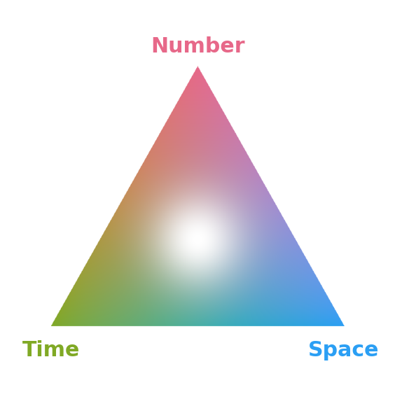

Gallant Lab · NeurIPS 2025
Voxelwise encoding models were fit to fMRI responses of 19 participants listening to naturalistic stories. Dense word embeddings entangle distinct semantic features in superposition; the Sparse Concept Encoding Model (Zeng & Gallant, NeurIPS 2025) transforms them into a sparse, non-negative space of learned concept atoms — an axis-aligned basis where conceptual selectivity can be read directly from voxel weights. The atoms for number time and space were fit as their own model band, disentangling the overlapping cortical representations of the three quantities (Hendrikx, Zeng, Yashaswini, Visconti di Oleggio Castello & Gallant, 2026, CCN poster).

Mixture hues mark overlap: number + time number + space time + space and all three (white). Selective spots stay vivid single hues. The tuning tetrahedron (bottom left) is the legend: every voxel sits at (R²number, R²time, R²space) in the color it has on the cortex. Distance from the apex is the map’s opacity (summed R²); direction from the apex is the tuning that sets the hue. Click the cortex to mark a voxel on it.
Saturation is the Participation Ratio. The tuning statistic reported per region in the paper — PR, from 1 (all the explained variance in one concept) to 3 (split evenly) — is exactly the number the map’s color carries: with hues 120° apart, the length of the mixed hue vector is √((3/PR − 1)/2). A vivid single hue is PR 1, a vivid pair hue is PR 2, and voxels lighten smoothly toward white as PR approaches 3, so the map and the regional statistics are one measure. That lightening is a plain power of PR rather than a threshold, deliberately: lines of constant PR are circles, so any switch-on point would draw a boundary on the cortex that a reader could mistake for a finding. The white is not painted on: the sRGB gamut is a cone, so a neutral is the only color with lightness left above the channel colors, and a balanced voxel is the only voxel that is neutral. The trade-off, stated plainly: at equal summed R² a balanced voxel now looks brighter than a selective one, so compare brightness within a hue, and read whiteness as generality.
Stimulus confound. Number, time and space words tend to occur together in these stories, so their contributions are correlated and cannot be separated cleanly. A region’s dominant hue is more trustworthy than its exact mixture.
The tuning maps share one absolute color scale across all brains (0 to the group map’s 99th percentile of channel R²), so opacity is comparable across the Brain buttons; individual brains are noisier, so their strongest voxels clip at the top. The Quantity network map is scaled per brain, 0 to that brain’s 95th percentile of positive R². Channel values are cross-validated across stories (leave-one-story-out; a few degenerate folds are excluded). Group maps average the 19 subjects’ R² after zeroing each subject’s voxels that miss full-model permutation p < 0.05; the single-subject viewers apply the same mask (about 20% of voxels pass), so they show exactly what enters the group average.
What the group map is. The mean of the 19 subjects’ maps on one surface. Averaging conserves the total explained variance exactly, but keeps only about a fifth of each subject’s peak (19.5% for number, 20.6% for time, 23.2% for space), because those peaks do not land in the same place in different brains. How much survives follows from how consistent the maps are: for S subjects with mean pairwise spatial correlation r, the group map’s spatial SD is √((1 + (S−1)r) / S) of a single subject’s, which predicts 0.38–0.47 here against 0.41–0.49 observed. So the group map behaves as a consistency filter. It answers where people agree, and says little about how strongly any one person responds. Use the Brain buttons for individuals.
Why time looks fainter. Time is not less represented, and its maps are no less consistent across subjects: the mean pairwise spatial correlation of the R² maps is 0.095 for number, 0.100 for time and 0.175 for space, so time is if anything marginally more consistent than number. The cause is the measure. Averaged over subjects the three dimensions take 35.7 / 31.1 / 33.2% of the quantity band in √R², but 37.7 / 25.6 / 36.7% in R² — and this map is in R². Squaring is a peak-weighting: it rewards a few strong voxels over many moderate ones, and time’s maps are the flattest of the three (peak-to-mean 4.93, against 5.77 for number and 5.94 for space). Time is what squaring costs.
Each dimension is a learned concept atom in a sparse, non-negative semantic space (Zeng & Gallant, NeurIPS 2025; Hendrikx et al., 2026, CCN): an axis-aligned basis where each axis is an interpretable concept, so selectivity can be read directly from voxel weights. Shown below: the vocabulary with the highest loadings on each of the three quantity atoms, standardized by each atom’s variability across the stories — the same units the encoding model sees, so words are comparable across atoms. A voxel tuned to an atom responds when words like these occur in the story.